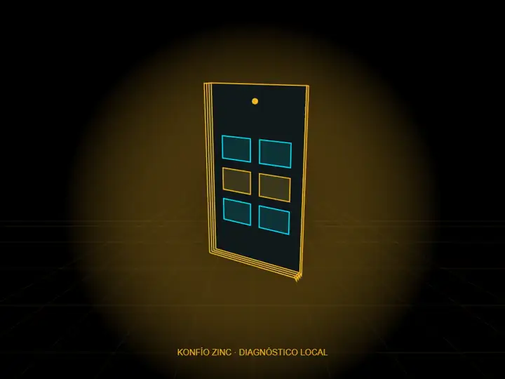

LABORATORIO PRIVADO · VÍDEO DIAGNÓSTICO LOCAL
Un recorrido por el universo de Konfío Zinc.
Despiece de un celular conceptual, generado por código y grabado como vídeo local. Compara MP4, WebM y fotogramas WebP en Canvas sobre el mismo movimiento. No es contenido Higgsfield ni 3D navegable. Complementa el despiece 2.5D.
Vista estática: sin descarga de vídeo ni secuencia.

Desplázate para separar y ensamblar. También puedes usar el control de posición con el teclado.
La animación muestra cuatro capas de un celular conceptual: carcasa, electrónica, panel y pantalla. Se separan en el centro del recorrido y vuelven al mismo estado al terminar. La imagen estática y los servicios siguen disponibles sin JavaScript o con movimiento reducido.
Laboratorio anterior: pósteres con scroll-world
Los seis servicios y sus descripciones están disponibles a continuación.
Seis servicios oficiales
- Agentes IA
Agentes para negocios y atención conversacional. - Landing Pages
Páginas para presentar tu negocio y facilitar el contacto. - Catálogos Digitales
Productos organizados en un catálogo digital. - Mini Webs
Presentación digital con información, contacto, redes, ubicación y QR. - Menús Digitales
Menús digitales para restaurantes. - Códigos QR
Códigos QR personalizados para compartir información.
Sin servicios pagos, APIs ni recursos externos. La calidad cinematográfica final y su presupuesto siguen pendientes.